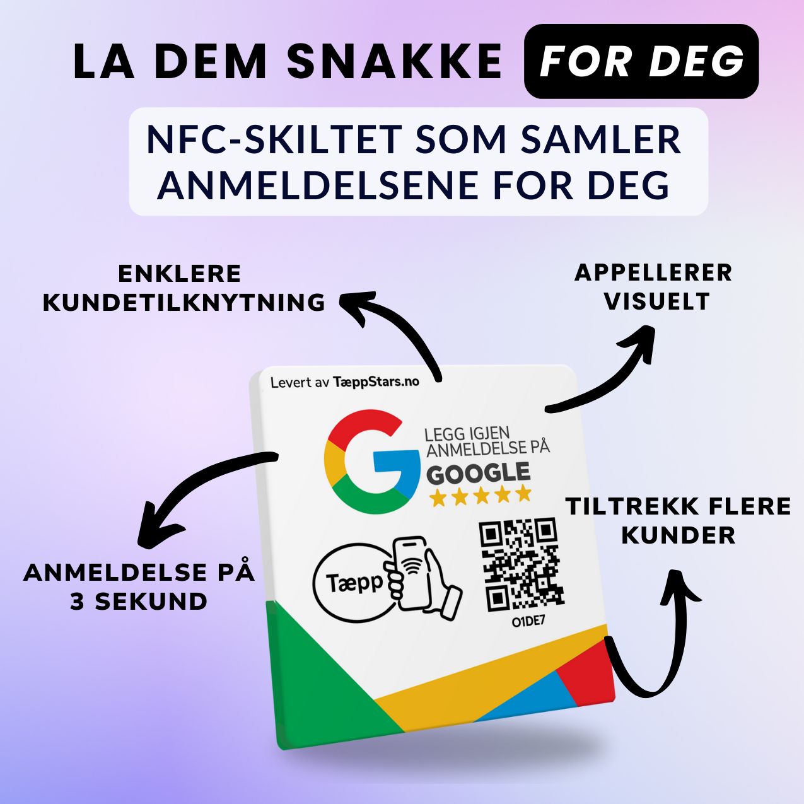
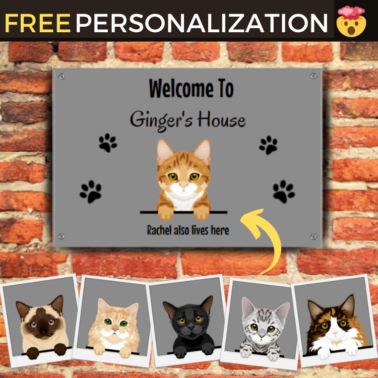

review-tech · head of growth · feb 2025 — aug 2026
tæppstars
I led growth for a startup reinventing how businesses collect customer reviews, physical NFC & QR plates, piloting the entire launch from product to €25k in revenue, €2k of monthly recurring revenue, and product-market-fit validation.

my role
- head of growth
- proprietary redirect system
- brand identity
- meta ads acquisition
- field sales team
deliverables
- nfc + qr hardware product
- web redirection system
- brand identity (multi-market)
- meta ads campaigns
- field sales operation
the starting point
Local businesses know reviews drive customers, but getting them is a constant, manual struggle. We bet on a physical solution: a tap-to-review NFC/QR plate that makes leaving a Google review a three-second action.
Launching meant building everything at once, the hardware logic, the software behind it, the brand, the acquisition, and the proof that anyone would actually buy it.
what actually moved the needle?
The numbers behind brick-and-mortar customer behaviour are brutal: 97% of consumers read online reviews before choosing a local business, most start with Google reviews, and it takes about 10 reviews on average before someone trusts a business. Reviews aren't a nice-to-have, they're the storefront. Yet collecting them stays a manual, awkward struggle for most businesses.
The product sold best when the friction it removed was made visible, 'more reviews in two weeks than in a year'. The creative job was to dramatize the before/after, not explain the technology.
Across markets (Spain, Norway) the same insight held: sell the outcome, more reviews, more customers, not the NFC chip.
i sold the outcome, not the chip, and validated pmf with a field sales team i built and led.(pmf = product market fit)
the marketing strategy
The acquisition bet was to apply B2C direct-response principles to a B2B product. Business owners are real people: they scroll the same feeds as everyone else. So instead of classic B2B channels, we targeted them on social media with engaging, direct-response video ads, and that engine generated €25k in revenue and €2k of MRR in a few months.
Around it, I designed a proprietary web-redirection system and the full brand identity, and complemented the online engine with a field sales team I recruited and led, adding on-the-ground proof of demand to the numbers coming from the ads.
"I've received more reviews in two weeks than in a whole year. It's crazy, thank you!"Irena, Valencia
the work
selected creative
image creative



